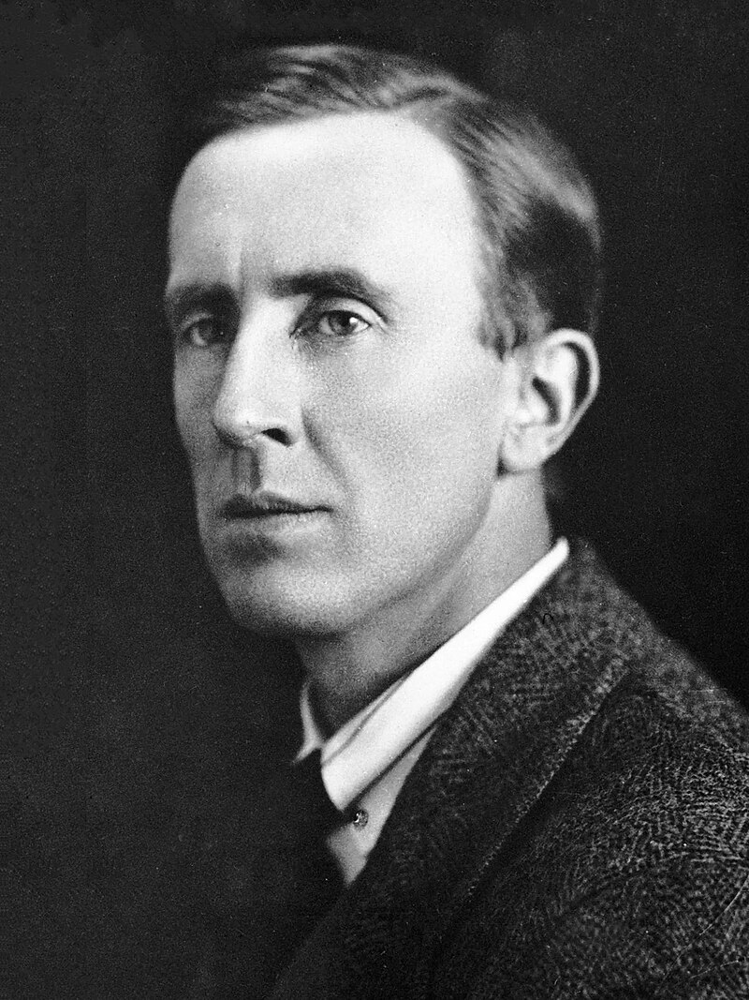
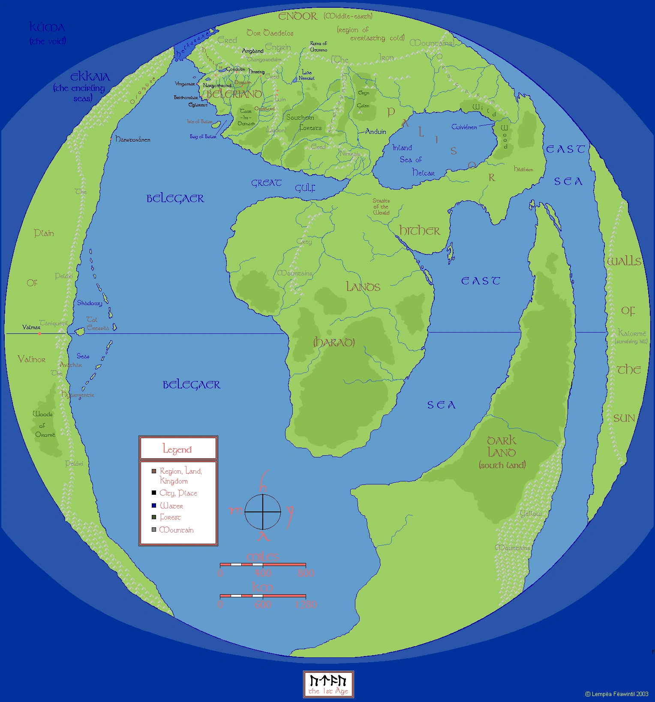
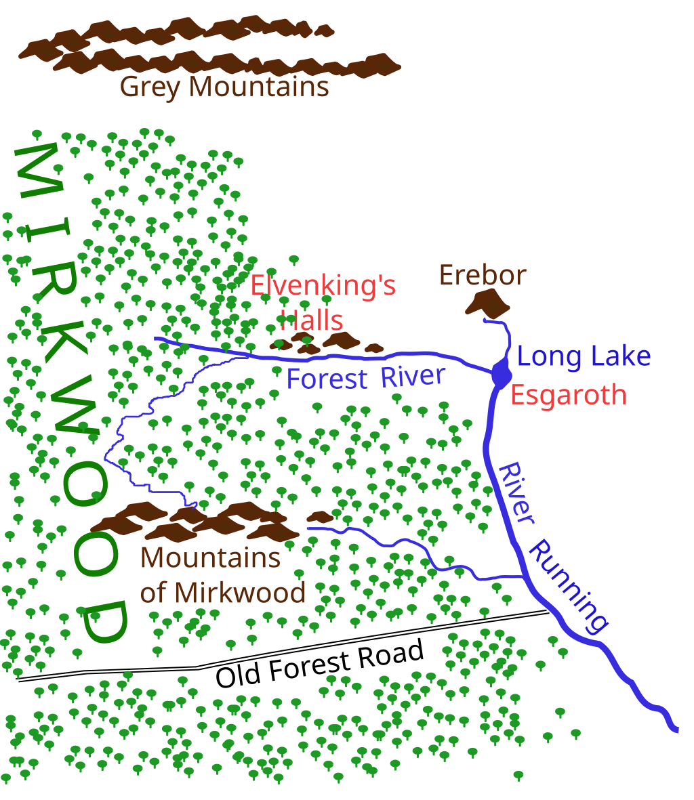

|  | John Ronald Reuel Tolkien,
|
|  |
Birth of the earth (Arda/Middle-earth)The First Age, also known as the Elder Days, was the first |
The start of our storyThe Second Age was the time-period of Arda that began after the climactic banishment of Morgoth into the Void by the Lords of the West (the Valar) and ended with the defeat of Sauron and his army by the Last Alliance of Elves and Men, a century after the Downfall of Númenor. |
The Second Age lasted for 3,441 years in total. This age was characterized by the rise (eventually with increased insolence) of Númenor, and Sauron in Middle-earth, the emergence of the Ringwraiths, and the early wars of the Rings between Sauron and the Elves. The One Ring came into existence during this period. |
Sauron - the next evilThe Third Age was the Age of Arda that lasted for 3021 years, from the first defeat of Sauron by the forces of the Last Alliance and the deaths of Elendil and Gil-galad, to the departure of Gandalf, Galadriel, Elrond, Bilbo, and Frodo to the Undying Lands after Sauron's final downfall during the Great War of the Ring. |
|
Bilbos journey |
The Hobbit, or There and Back Again is the first |